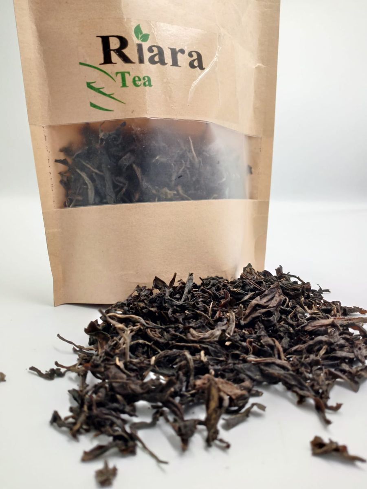
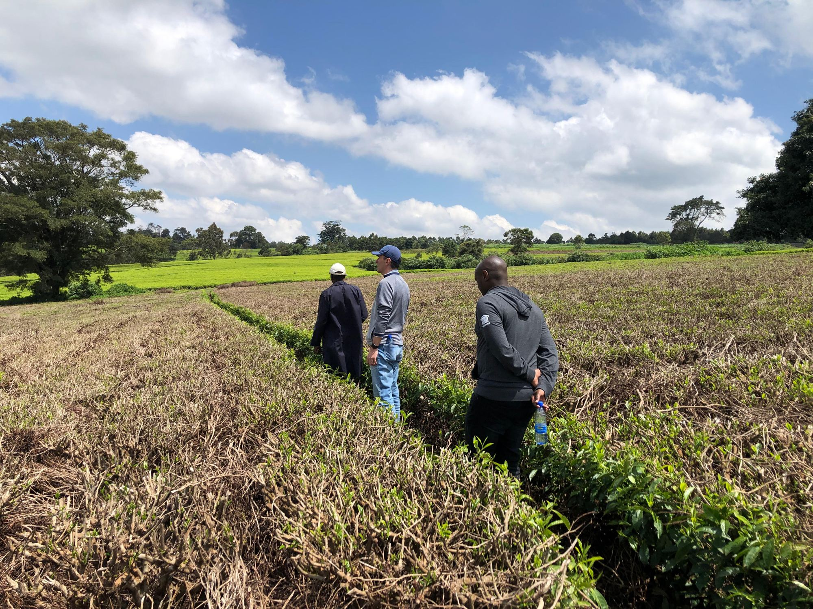
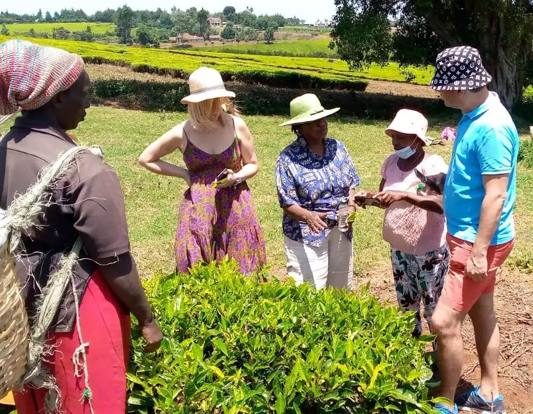

Tea experiences in the Limuru highlands
Walk the rows of our family tea farm, pick a few leaves with our farmers, watch the factory turn fresh leaf into tea, then sit down to taste the result. Riara is 45 minutes from Nairobi, with tours from KES 1,000.

Our tea
Shop now
Tea tours
Explore toursChoose your tea experience
Whether you have two hours or a whole day, there's a tour for you.

Where every journey begins with a sip
Riara is a family-owned tea farm in the green highlands of Limuru. What started as a farm is now a place where visitors come to learn where Kenyan tea comes from, from the leaf in the field to the cup in your hand.
- Guided by the farmers and tea makers themselves
- Hands-on: pick, sort, blend and taste
- Tours for families, schools, groups and international visitors
- Pay easily with M-Pesa
More than a tea tour
Tea plantation walks
Walk the estate, learn how tea is grown, and try picking and planting.
Factory visits
See withering, rolling, oxidation, drying and grading on a working factory floor.
Tasting & blending
Taste premium Kenyan teas and make your own blend with our tea experts.
Wellness retreats
Forest walks, mindful tea moments and meditation in quiet gardens.
School & family days
Fun, hands-on learning about farming, science and sustainability.
Culture & community
Storytelling, local hosts and tree planting with the Limuru community.
What our visitors say
A perfect tea farm tour: warm hosts, delicious tea and a peaceful garden lunch. A beautiful day overall!
Definitely going back again! An amazing tea experience with scenic views, hands-on learning and unforgettable tea tasting.
Riara Tea Farm is more than just a farm. It's a full-body experience that reconnects you with the magic of Kenya.
We had a lovely visit to the tea farm. The guide in the fields was very knowledgeable.
Ready for your tea adventure?
Tell us your date and group size and we'll confirm availability, usually within 24 hours.